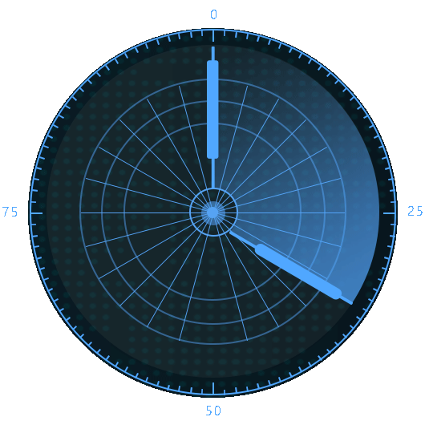

{% extends "base.html" %}


{% block main %}


<!--扫描开始-->
<div class="con">
    <div class="con-lf">
        <div class="con-lf-t">
            
        </div>
        <div class="con-lf-gif">
            
        </div>
        <div class="con-lf-l">
            
        </div>
    </div>
    <div class="con-rt">
        <form id="scan_form">
            <div class="v-form-block">
                <div class="v-form-group">
                    <label>品牌</label>
                    <select class='chosen' data-placeholder=' ' multiple name="plugin_list[]">
                        {% for i in plugin %}
                        <option value="{{ i.model_name }}">{{ i.brand }}</option>
                        {% endfor %}
                    </select>
                </div>
                <div class="v-form-group">
                    <label>IP段</label>
                    <input type="text" name="target" value="192.168.0.0-192.168.0.255">
                </div>
                <div class="v-form-group">
                    <label></label>
                    <span class="v-btn v-gra" id="scan_but">开始扫描</span>
                </div>
            </div>
        </form>
    </div>
    <div class="clearfix"></div>
</div>
<!--扫描结束-->


<script>

    //初始化chosen
    $('.chosen').chosen();

</script>

<script src="../static/js/base.js"></script>

<script>

    $("#scan_but").click(function(){
        $.ajax({
            async:false,
            type: "POST",
            url:'/scan/',
            data: $('#scan_form').serialize(),
            success:function (data) {
                if (data == 'success'){
                    location.replace('/progress_bar/')
                }
            }

        })
    })


</script>

{% endblock %}